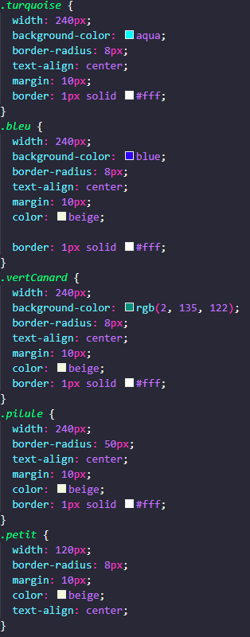

üéØ Objectifs de cet exercice :
Apprendre le principe DRY (Don't Repeat Yourself) pour écrire du CSS optimisé et maintenable.
üì¶ Qu'est-ce que le DRY ?
DRY = "Don't Repeat Yourself" (Ne vous répétez pas) ! C'est un principe fondamental en programmation :
- Éviter la duplication de code
- Factoriser les styles communs
- Créer des classes réutilisables
- Faciliter la maintenance du code
üí° Exemple avec ces boutons :
Au lieu de répéter les mêmes propriétés CSS pour chaque bouton :
- Avant DRY : Chaque bouton a toutes ses propriétés définies individuellement → Code répétitif et volumineux
- Après DRY : Classe
.btnpour les styles communs + classes spécifiques pour les variations → Code optimisé et maintenable
üîß Principe des classes multiples :
Un élément peut avoir plusieurs classes :
<div class="btn turquoise">-
.btn : Styles de base (padding, border-radius, cursor, etc.)-
.turquoise : Couleur spécifique✨ Exercice :
Ouvrez le fichier exo12.css et faites le ménage pour optimiser ce code au maximum !
Objectif : Passer de 51 lignes à 31 lignes de CSS pour le même rendu visuel.
